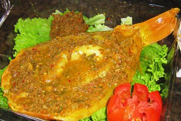

Sasagun

Sasagun adalah makanan khas Batak Toba yang bernama Sasagun. Berbahan dasar tepung beras yang kemudian digongseng dengan kelapa serta kemudian dicampur lagi dengan gula merah terlebih gula aren. Masyarakat suku Batak percaya, sasagun akan lebih nikmat jika pada proses pengolahannya ditambah dengan nanas ataupun durian.
Bahan & alat:
Bahan:
- 1 cup tepung beras kering (asli 2 kg)
- 1 gelas kelapa larut (asli 700 gram)
- 3-4 sdm gula pasir (asli 300 gram)
Langkah memasak:
- Siapkan bahan.
- Panaskan teflon dengan api sedang cenderung kecil masukan kelapa parut dan tepung beras. Aduk-aduk sampai berubah warna kecokatan.
- Matikan kompor angkat. Siapkan wadah ambil 4 sdm tambahkan 1 sdm gula pasir aduk rata dan sajikan